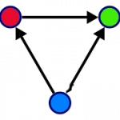
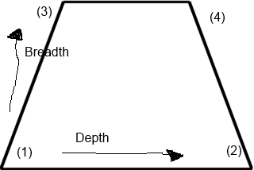
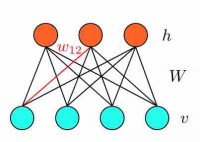
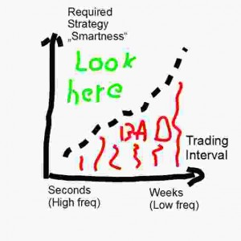

August 16, 2014
I am still a fan of owning my own metal. Sure, doing things with configurable machine images in the cloud is popular because you don’t have to go through the “hassle” of managing your own hardware, but, isn’t that “hassle” really just a problem for big organizations where hundreds/thousands of users have to be kept happy at minimal cost ? So is “the cloud” not only a solution to a problem of people who have to manage scale, but are at the same time trying to sell-on that solution to the individual joe out there who, lets face it, doesn’t really need it ? Anyway, as I said, I am a fan of owning my own metal. Inexpensive off-the-shelf hardware can get you a long way if you take the time to configure it properly and if you stay away from that unspeakable thing whose name starts with a W and that is being marketed as an operating system. A 16-64Gb RAM desktop with one or even two GPUs will pretty much do anything you need. It seems that backtesting strategies uses way more computing resources than actual live trading, which is why these days you can setup and run an intraday strategy from any decent laptop with confidence, while for the backtesting and research you really would want the RAM + CPU + GPU monster above or a small little supercomputing cluster of your own, as I have recently described here.
June 13, 2014
I have made INTRADAY-PartA.tar.gz and INTRADAY-PartB.tgz available for download.
http://censix.com/download/
April 11, 2014
Instead of focusing on predicting price direction and price volatility with nonlinear models derived with machine learning methods, an alternative would be to try and discover exploitable price relationships between assets of the same class and react (=trade) when mispricing happens, in other words, do statistical arbitrage. In a sense this is somehow ‘easier’ than attempting to forecast prices, since the only thing one has to do is to find a relatively stable, linear or non-linear relationship between a group of at least two assets and assume that, from the time of its detection, that relationship will carry on for some time into the future. Trading under this assumption is then very much a reactive process that is triggered by price movements that diverge significantly from the modeled relationship. Traditional Pair Trading and trading of assetts in a VECM (Vector Error Correction Model) relationship are good examples for statarb using linear models. So why not use a simple one-layer neural network or even an RBM to discover a non-linear price relationship between two not-cointegrated assets and if this discovery process is successful, trade it in a similar way to a classical pair ? Things become even more interesting when groups with more than just two assets are considered. This would then be the non-linear equivalent of a VECM.
March 12, 2014
Lets say we have a univariate timeseries predicition target that can either be of type regression or classification, and we have to decide what input features to select. More concretely, we have a large universe of timeseries that we can use as inputs and we would like to know how many we should pick (breadth) and also how far back in time we want to look for each one (depth). There is a two dimensional space of choices, delimited by the following four extreme cases, under the assumption that we have a total of N series and we can, at the most, look back K timesteps: (1) pick only one series and lookback one timestep, (2) pick only one series and lookback K timesteps, (3) pick N series and lookback one timestep, (4) pick N series and lookback K timesteps. The optimal choice will likely not be either of those, since (1) and (2) may not contain enough predictve information and (3) and especially (4) will either not be feasible due to computing contstraints or contain too much random noise. The suggested way of approaching this is to start small at (1), see what performance you get, and then increase the size of the input space, either breadth or depth-wise, until you have reached satisfactory prediction performance or until you have exhausted your computing resources and need to either abandon the whole approach :( or buy a new (farm of) desktop(s) :)
February 12, 2014

Stacked Autoencoders (SAs) and Restricted Boltzmann Machines (RBMs) are very powerful models for unsupervised learning. Unfortunately, at the time of writing it looks as if there are no direct R implementations available, which is surprising since both model types have been around for a while and R has implementations for many other machine learning model types. As a workaround, SAs could be implemented using one of several neural network packages of R fairly quickly (nnet, AMORE) and RBMs, well, someone would have to write a good R implementation for them. But given that training both model types requires a lot of computational resources, we also want an implementation that can make use of GPUs. So at the moment the simplest solution we seem to have is to use Theano. It can use GPUs and it provides implementations of stacked (denoising) autoencoders and RBMs. In addition Python/Theano code for several other more exotic Boltzmann Machine variants is floating around the net as well. We can use rPython to call these Python functions from R but the challenge is the data. Getting large datasets back and forth between R and Python without using the ascii serialization that rPython implements (too slow) needs to be solved. An at least equally potent implementation of autoencoders that supports GPU use is available via the Torch7 framework (demo). However, Torch7 functions are called using ‘lua’ and calling them from within R instead will require some work at C level.
In conclusion: Use Theano(Python) or Torch7(lua) for training models with GPU support and write the trained models to file. In R, import the trained model from file and use for prediction.
Update 25 April 2014: The following nice solution “Call Python from R through Rcpp” should bring us one step closer to using Theano directly from R.
January 13, 2014
When trying to find exploitable market patterns that one could trade as a retail trader, one of the first questions is: What trading frequencies to look at? Monthly? Weekly? Daily? Or intraday anywhere between 5 seconds to 1 hour? With limited time available for conducting research at all of these timescales, this becomes an important question to answer. I and others have observed that there seems to be a simple relationship between trading frequency and amount of effort needed to find a profitable strategy that is purely quantitative and has acceptable risk. In short: The lower (=slower) the frequency you want to trade at, the ‘smarter’ your profitable strategy needs to be. tradefreqvssmartnessAs an example, one could look at the (very) high frequency end of the spectrum, where marketmaking strategies based on really very simple mathematics can be very profitable, if you manage to be close enough to the market center. Taking a big jump into the daily frequency realm, it is becoming much harder to find quantitative strategies that are profitable while still being based on rather simple mathematics. Trading in weekly and monthly intervals, using simple quantitative methods or ‘technical’ indicators only is a very good recipe for disaster. So, assuming for a moment that this relationship is indeed true and also considering that we can and want to use sophisticated machine learning techniques in our trading strategies, we could start with a weekly frequency window and work our way towards higher frequencies. Weekly trading does not have to be automated at all and can be done from any web-based brokerage interface. We could develop a bag of strategies, using publicly available historical data in combination with our favourite learning algorithm to find tradeable market patterns and then execute the strategy manually. At this scale, all the effort should go into finding and fine-tuning the quantitative strategy and very little thought needs to be put into trade execution. Trade automation effort: 0%. Strategy smartness required: 100% Daily trading should be automated, unless you can really dedicate a fixed portion of your day to monitoring the markets and executing trades. Integrating machine learning algorithms with automated daily trading is not a trivial tasks, but it can be done. Trade automation effort: 20%, Strategy smartness required: 80% On intraday timescales, ranging from minutes and seconds to sub-seconds, the effort you will have to undertake to automate your trades can lie anywhere in the range between 20% and 90%. Fortunately the smaller the timescale becomes the ‘dumber’ your strategy can be, but ‘dumb’ is of course a relative concept here. Trade automation effort: 80%, Strategy smartness required: 20%
December 10, 2013
At one point in the design of a (machine) learning system you will inevitable ask yourself what features to feed into your model. There are at least two options. The first is to use hand-crafted features. This option will normally give you good results if the features are designed well (that of course is a tautology, since you would only call them well designed if they gave you good results ….). Designing hand-crafted features requires expert knowledge about the field to which the learning system will be applied, i.e. audio classification, image recognition or in our case trading. The problem here is that you may not have any of that expert knowledge (yet) and it will be very difficult to come by or take a lot of time or most likely both. So the alternative is to learn the features from the data or in other words, use unsupervised learning to obtain them. One requirement here is that you really need lots of data. Much more of it than you would need for hand-crafted features, but then again it doesn’t have to be labeled. The benefit however is clear. You don’t really need to be an expert in the specific field you design the system for, i.e. trading and finance. So while you still need to figure out which subset of the learned features will be best for your learning system, that is also something you would have to do with the hand-crafted features. My suggestion: Try designing some hand-crafted features by yourself. If they don’t perform and you have good reasons to believe that it is possible to have better results than the ones you are getting, use unsupervised learning methods to learn features. You can even create a hybrid system that uses designed and learned features together.
November 19, 2013
When I first started to look into doing my own automated trading, I had three requirements on the set of tools that I wanted to use. 1) They should cost as little as possible to get me started, even if that meant that I had to do a lot of programming and customizations myself (==it would cost time) 2) There should be a community of like-minded people out there using these same tools for a similar purpose. 3) The tools should allow me to go as deep into the entrails of the system as necessary, even if in the very beginning my aim was more to discover the basics. I did not want to find myself in a situation where two years down the line I would need to switch to a different set of tools, just because the ones I had started out with did not allow me to do what I wanted because of problems with closed sources and restrictive licensing. As a result I came to choose ‘R’ as my language of choice for developing trading algortihms and I started using Interactive Brokers since they provide an API for interfacing with their brokerage system. While there are many nice trading tools that connect to the IB Trader Workstation and some can be used for automated trading, none of these offer the same power, flexibility and community support that the ‘R’ project has. In addition, R has really an amazing repository of free and very adavanced statistical and machine learning packages, something that is essential if you want to create trading algorithms.